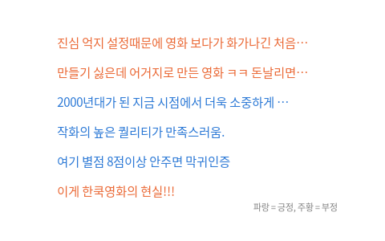

Lucy Park (2015), github.com/e9t/nsmc. 한국어 영화 리뷰 20만 개 (학습 15만 · 시험 5만), 긍정 · 부정 반반

| document | label |
|---|---|
| 한국 개신교의 교만이 도를 넘어서고 있음을 보여주는 영화 고개 숙이고 바짝 엎드려 낮은 곳을 지향해도 모자랄 판에 뭐 잘했다고 이따위 쓰레기나 만들어 내놓는지 당췌 이해가 안된다 독실한 개신교 집안에서 성장한 내가 교회를 떠난 이유도 바로 이거다 | 0 |
| 무지막지하게 지루함. 배우들이 아까움. 내용도 앞뒤없고 별로 들어오는 내용도 없고 답답함. 이야기를 좀더 쉽게 보여주던지.... 이도 저도 아니고 내가 수목장이 되어서 나무가 되어버린 느낌... 답답하다.. | 0 |
| 성우님들의 열연이 마음에 들었습니다 | 1 |
| 대통령마누라의 어이없는 죽음, 알아듣기 힘든 한국말 차라리 영어만 하등가, 북한놈이라는 세끼가 씨오브재팬이라질 않나, 동해에 칠함대가 철수하면 한국 망한다고 미친 존나 한국을 OO으로 생각하는 감독, 백악관이 이렇게 쉽게 털리면 누가 테러안하겠냐 앙? | 0 |
| (평점조절용 1) 애니인데 분위기가 좀 음산? 그로테스크하고, 캐릭터들이 무민가족 빼고 인간인지 뭔지 다른 종족은 기괴해요. 괴팍한, 우울한, 종말론적인 캐릭터들이 많이 나오고 무민가족 외에 다른 캐릭터간에는 정상적인 의사소통(대화)아닌 일방적.. | 0 |
| 모이따구 영화를? | 0 |
| 열 | 종류 | 빈칸 | 고유값 수 | 범위 · 대표값 |
|---|---|---|---|---|
| id | 숫자 | 0 | 149,995 | 33 ~ 10,278,149 (평균 6,743,647.7) |
| document | 글자 · 범주 | 0 | 146,182 | 가장 흔한 값: 굿 (0.1%) |
| label | 숫자 | 0 | 2 | 0 ~ 1 (평균 0.4988) |
140자 제한 때문에 끝이 잘린다
| ① 한 행 | 리뷰 한 문장 |
| ② 입력 X | 리뷰 글 |
| ③ 출력 y | 긍정 1 / 부정 0 |
| ④ 평가지표 | 정확도 (반반이라 쓸 만하다) |
| ⑤ 기준선 | 늘 '긍정' (50%) |
문제를 정할 때 처음 채워 보는 칸들입니다. 여기서 끝이 아니라, 시험 데이터를 어떻게 나눌지 · 틀렸을 때 손해가 얼마인지 · 예측 시점에 정말 알 수 있는 값인지 같은 칸을 더 붙일수록 좋은 문제가 됩니다.
baseline (always positive): accuracy 50.3% char 1-3 grams + logistic : accuracy 84.8%
누가, 왜, 어떻게 만든 데이터인지 직접 확인해 보세요.
인턴 · 산학협력 · 프로젝트 주제를 고를 때 참고하세요 (일반적인 예시).